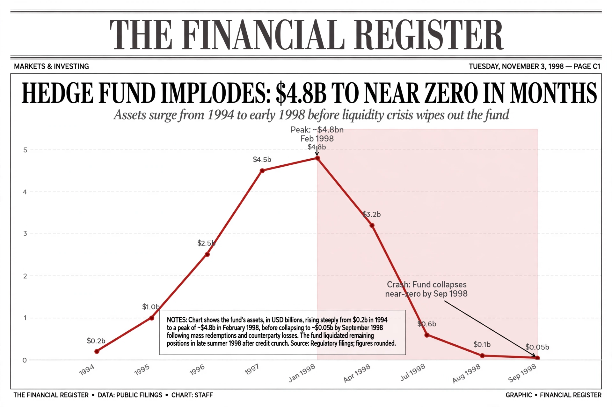

| Type | Hedge fund |
|---|---|
| Founded | 1994 |
| Defunct | 2000 (liquidated) |
| Headquarters | Greenwich, Connecticut, U.S. |
| Key people | John Meriwether, Myron Scholes, Robert C. Merton, David Mullins |
| Assets at peak | ~$126 billion (1998) |

Long-Term Capital Management L.P. (LTCM) was a highly leveraged hedge fund based in Greenwich, Connecticut, that used absolute-return trading strategies combined with high financial leverage. Founded in 1994 by former Salomon Brothers vice-chairman John Meriwether, its board included Nobel laureates Myron Scholes and Robert C. Merton, pioneers of the Black–Scholes model.
LTCM specialized in convergence trades: buying underpriced securities and shorting overpriced ones — for example, off-the-run versus on-the-run U.S. Treasury bonds — expecting prices to converge. Because expected profits per trade were tiny, the fund used leverage of more than 25-to-1 and held derivatives positions with a notional value exceeding $1 trillion, many based on options and interest-rate swaps.
The fund returned over 40% annualized in its first years, attracting capital from major banks and wealthy investors. By early 1998 it managed about $4.7 billion in equity against roughly $126 billion in borrowed assets.
In August 1998, Russia defaulted on its domestic debt, triggering a global flight to quality. Spreads widened instead of converging; LTCM lost $1.9 billion in August alone and $4.6 billion in less than four months. Fearing a systemic cascade if the fund's positions were dumped, the Federal Reserve Bank of New York organized a $3.625 billion private bailout by 14 financial institutions in September 1998. The fund was liquidated by 2000.
No public money was spent, and the rescuing banks roughly recovered their funds. The episode became a landmark case study in model risk, leverage, liquidity risk, and the limits of quantitative finance, influencing later debates about systemic risk that resurfaced in the 2008 financial crisis.
From Wikipedia, the free encyclopedia. Recreated from memory.